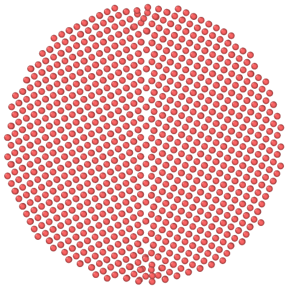
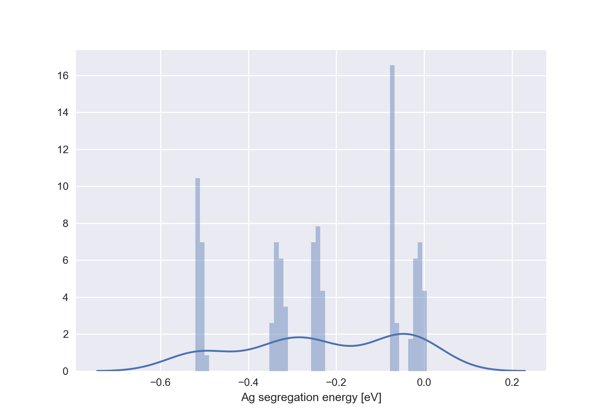
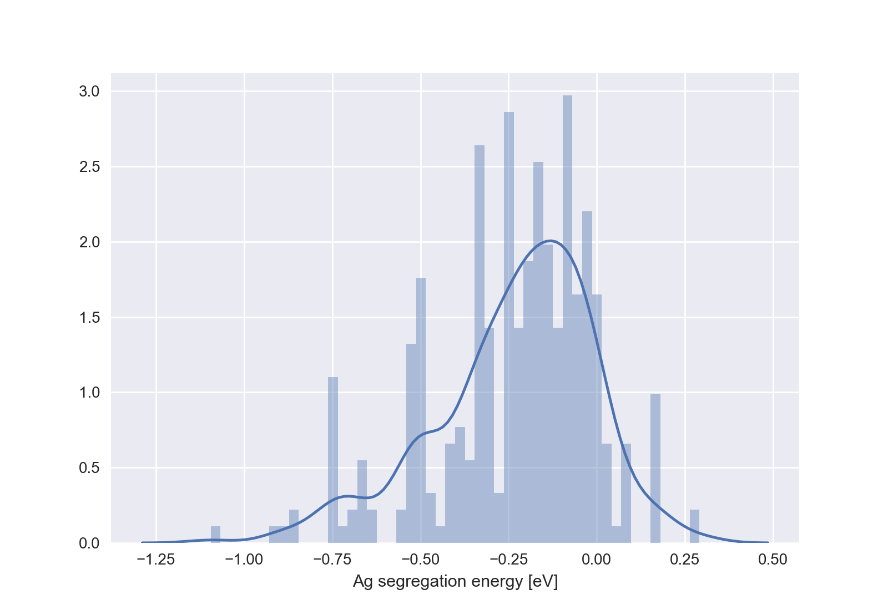
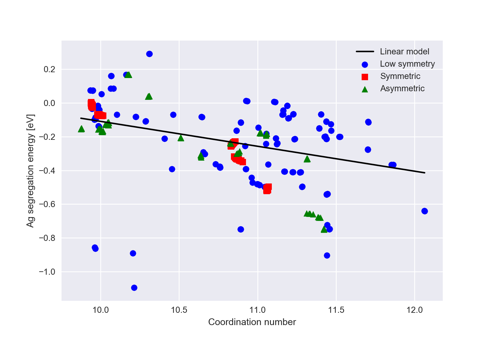

Example¶
In this section, we’ll set up an example project and calculate properties for a couple of GBs.
Step 0) Get a potential¶
Before we can make a new project, we’ll have to choose a potential. For the sake of this example, let’s choose the publicly available potential of Williams et al. for Cu-Ag from the NIST repository. Once we have the potential, let’s make a new scratch directory and copy it in (you may need to change some path elements to be appropriate for your system):
cd {your_dir}
mkdir cgb_tut
cd cgb_tut
cp ~/Downloads/CuAg.eam.alloy .
In the future, we might want to look at some other Cu-X system that relies on a different potential Cu-X potential. Even though they both treat Copper (plus something else), they may describe the Cu system slightly differently, i.e. different lattice parameter and elastic constants. To be as consistent as possible when we compare Cu-X and Cu-Y results, we can rescale each potential so they at least have the same bulk lattice constant to have the same value. This is easy to do and has the advantage that we can at least make fair comparisons of the geometry of a particular undecorated GB represented by two different potentials.
The experimental lattice parameter for copper is about 3.597 Å. We’ll only use one potential in this tutorial, but let’s go ahead and use cgb_rescale_potential.py to rescale the potential to a nice round value of 3.6 Å:
cgb_rescale_potential.py ./CuAg.eam.alloy Cu -fcc 3.6
> Step, error
> (0, 0.075300180026761421)
> (1, -1.9982424159792345e-08)
> Rescaled potential written to {your_dir}/tutorial/CuAg_rescaled_3_6.eam.alloy.
> The final lattice constant was 3.59999998002.
As a sanity check, let’s quickly use cgb_bulk_modulus.py to check the bulk modulus, which should be close to the experimental value of 140 GPa:
cgb_bulk_modulus.py ./CuAg_rescaled_3_6.eam.alloy Cu -fcc 3.6
> Cu
> Repetitions, atom count, B (GPa), host vol
> (1, 4, 133.55442263960001, 11.663999808219492)
Yes, this is in the right ball-park. We’re ready to make some clusters!
Note
As with all calculations using classical force fields, results are only as good as the force field you use. For a real project try to find a potential that behaves well in the host-rich side of the phase diagram, and ideal which has been shown (or fit) to well reproduce the energetics of structural defects.
Step 1) Make a new project¶
ClusterGB will let you initialize a new Project by using cgb_init_project.py as
long as you’re not in a directory that has either a clustergb.project or clustergb.job file already. In
addition to a unique name, each project will also require that you provide a potential, host species, and crystal
structure information.
Projects also hold many other values in their par Namespace which will be inherited by all
Jobs. You can read about these choices in the cgb_init_project.py documentation or
directly in the documentation for Project. For this tutorial, the only non-default
values we’ll use are for the solute (Ag instead of none) and the size of the cluster (which we’ll make unreasonably
small in order to speed up calculation times):
cgb_init_project.py CuAgTut --potential ./CuAg_rescaled_3_6.eam.alloy --host Cu --fcc 3.6 --solutes Ag --radius 30 --inner-radius 10
> Initializing a new Project in CuAgTut
> Running bulk cluster
> Running bulk-like cluster with a substitutional Ag defect.
> Project initialization runtime = 16.6144618988s.
CuAgTut now has a clustergb.project file which is a pickled version of the
Project instance. The script has run two LAMMPS calculations: one for a cluster of
perfect bulk Cu, and another cluster with bulk geometry but containing a substitutional Ag atom. Let’s use
cgb_interactive.py to take a look at results for the pure bulk cluster:
cgb_interactive.py
>>> proj = cgb.osio.load_project("CuAgTut")
>>> proj.bulk.thermo_data.pe - proj.bulk.thermo_data.init_vals.pe
> -20.869990979997965
>>> proj.bulk.thermo_data.c_pe_inner - proj.bulk.thermo_data.init_vals.c_pe_inner
> 0.04855049000002509
Here we see that the total energy of the cluster (radius = 30 Å) goes down by 21 eV when we allow it to relax. However, the energy of the inner sub-sphere (radius = 10 Å) actually goes up by 0.05 eV! This is actually perfectly sensible; the subsphere is initially perfect Cu bulk, and the cluster surface is farther away than the potential’s cutoff distance. But after we allow the structure to relax, elastic distortions from the surface penetrate deeply enough to perturb the inner sub-sphere. However, in our interactive Python environment, we can see that even for a small cluster this strain energy is small on a per-atom basis:
>>> (proj.bulk.thermo_data.c_pe_inner - proj.bulk.thermo_data.init_vals.c_pe_inner) / proj.bulk.thermo_data.v_n_inner
> 0.00013157314363150432
Step 2) Make a child job¶
Jobs inherit almost all of their parameters from their parent
Project's par namespace. The major exception to this is values definining the
GB character. Using cgb_init_job.py there are two main ways to define the GB character, to specify the shared axis
\(\langle ijk \rangle\), the relative misorientation about this axis \(\theta\) (in degrees), and the GB normal
plane \((lmn)\) (for the left grain), or by explicitly providing two rotation matrices (with at least one shared
row.) We’ll use the first approach to make a simple, highly symmetric tilt boundary:
cd {your_dir}/cgb_tut/CuAgTut/
cgb_init_job.py symmetric --procs 4 macro --shared 0 0 1 --misorientation 53.13 --normal 1 2 0
> Initializing a new Job in symmetric
> In the transformed coordinates, the shared axis is [ 0. 0. 1.]
> Minimizing microscopic DoF...
> Trial 0 (in 23 steps), stochasitcally minimized GB energy = 942.45343731
> Trial 1 (in 195 steps), stochasitcally minimized GB energy = 942.859555904
> Trial 2 (in 11 steps), stochasitcally minimized GB energy = 909.805311475
> Trial 3 (in 13 steps), stochasitcally minimized GB energy = 924.716316697
> Trial 4 (in 200 steps), stochasitcally minimized GB energy = 892.776588315
> Best GB energy found = 892.776588315
> Performings common neighbour analysis...
> Reordering structure...
> GB energy = 892.776588315
> Job initialization runtime = 501.125413895s.
By default there is no annealing, so the microscopic degrees of freedom have just been (stochastically) optimized by translating the grains relative to each other and merging atoms from either grains. It is often useful to visualize our results, e.g. with Ovito. Below we show our cluster using a slice in the \((001)\) plane and see the familiar kite structure from symmetric \(\Sigma5\) tilt GBs:
{kind=link}
Exercise 1
Create new projects with different radii and find the parameters which give a converged GB interfacial energy. (Very roughly, this should occur when the inner radius is about 20 lattice vectors, and the outer radius is about 15 lattice vectors.)
Step 3) Calculate segregation¶
Next, we’ll calculate the segregation energy of a substitutional Ag atom at each GB site that was identified by common neighbour analysis.
These are already at the top of the gb.xyzin structure file, but how many there are is also stored in the
Job object. First, let’s see how many sites there are then run the segregation
calculations.
cd {your_dir}/cgb_tut/CuAgTut/symmetric
cgb_interactive.py
>>> job = cgb.osio.load_job() # if you give no name, load_job and load_project will look in the working directory
>>> job.gb.natoms_nonbulklike
> 109
>>> quit()
Now, with a single command, we’ll calculate the segregation energy of Ag to each of these sites–this will take a couple minutes, so you might want to grab a coffee:
cgb_run_monosegregation.py --procs 4
> Starting monosegregation calculation for symmetric
> Calculating Ag binding to symmetric...
> ...For site 0
> ...For site 1
[...]
> ...For site 108
> symmetric monosegregation runtime = 399.633692026s.
> Total monosegregation runtime = 399.637465954s.
Step 4) Plot results¶
For analyzing the data, there are no specific executables. Rather, each cgb_run_* script saves calculated values in
the .results namespace of the Job objects, which can then be loaded and parsed using
custom Python code. For now, let’s use the Seaborn library (which uses matplotlib) to make a histogram of dilute
segregation energies from our symmetric Job:
cd {your_dir}/cgb_tut/CuAgTut/symmetric
cgb_interactive.py
>>> job = cgb.osio.load_job()
>>> seg_en = job.results.monosegregation.Ag.energy
>>> sns.distplot(seg_en, kde=True, bins=50, hist_kws={'align': 'mid'})
> <matplotlib.axes._subplots.AxesSubplot object at 0x117441e10>
>>> plt.xlabel("Ag segregation energy [eV]")
> Text(0.5,0,'Ag segregation energy [eV]')
>>> plt.show()
This should give a plot similar to the one below:
{kind=link}
Here we see five energy peaks, even though we were expecting three (one for each of the unique sites in the GB kite structure shown above). This is because the small cluster size leads to surface effects distorting the environment of some GB sites, and thus different segregation energies. Looking at the local maxima of the smoothed distribution gives us a hint which energies have had their degeneracy split by the surface effects.
Exercise 2
Using the projects with different radii from Exercise 1 (or new radii), run segregation energy calculations until all the segregation energies are converged to within ±0.01 eV of the three unique values.
Step 5) Run new GBs¶
To get more than three unique segregation energies, let’s exploit ClusterGB‘s ability to handle lower symmetry and calculate two more boundaries. First, let’s make another \(\Sigma 5\) boundary, but with just a minor tweak to the normal plane we’ll ensure that it’s asymmetric:
cd {your_dir}/cgb_tut/CuAgTut/
cgb_init_job.py asymmetric --procs 4 macro --shared 0 0 1 --misorientation 53.13 --normal 2 1 0
> Initializing a new Job in asymmetric
> In the transformed coordinates, the shared axis is [ 0. 0. 1.]
> Minimizing microscopic DoF...
> Trial 0 (in 200 steps), stochasitcally minimized GB energy = 950.186210696
> Trial 1 (in 200 steps), stochasitcally minimized GB energy = 1154.71379402
> Trial 2 (in 200 steps), stochasitcally minimized GB energy = 928.110650849
> Trial 3 (in 200 steps), stochasitcally minimized GB energy = 1110.27379922
> Trial 4 (in 200 steps), stochasitcally minimized GB energy = 977.936360536
> Best GB energy found = 928.110650849
> Performings common neighbour analysis...
> Reordering structure...
> GB energy = 928.110650849
> Job initialization runtime = 620.596703053s.
As we might expect, the GB interfacial energy (given in mJ/m^2) is somewhat higher for this less-symmetric boundary,
even though the shared axis and misorientation are identical to our symmetric job. Below, we can see the result of
the asymmetry. Note also that when the boundary relaxes, there is still a preference to form local environments similar
to the kites we saw in the symmetric case.
{kind=link}
Second, let’s make a very low-symmetry tilt boundary by choosing some (pseudo) random numbers for the misorientation and GB normal plane:
cgb_init_job.py low_sym --procs 4 macro --shared 0 0 1 --misorientation 55.55 --normal 0.1234 0.4321 0
> Initializing a new Job in low_sym
> In the transformed coordinates, the shared axis is [ 0. 0. 1.]
> Minimizing microscopic DoF...
> Trial 0 (in 67 steps), stochasitcally minimized GB energy = 969.826375717
> Trial 1 (in 200 steps), stochasitcally minimized GB energy = 1018.07622302
> Trial 2 (in 200 steps), stochasitcally minimized GB energy = 971.924709166
> Trial 3 (in 200 steps), stochasitcally minimized GB energy = 980.819954106
> Trial 4 (in 200 steps), stochasitcally minimized GB energy = 944.48786796
> Best GB energy found = 944.48786796
> Performings common neighbour analysis...
> Reordering structure...
> GB energy = 944.48786796
> Job initialization runtime = 558.450699806s.
{kind=link}
Running cgb_run_monosegregation.py from the Project-level directory will automatically
calculate segregation energies for each Job in Project.child_names–don’t worry
though, it will automatically see that the symmetric Job has already completed the
calculation and skip over it (as long as we haven’t used the force-recalculate option!).
cgb_run_monosegregation.py --procs 4
> Starting monosegregation calculation for symmetric
> Calculating Ag binding to symmetric...
> symmetric monosegregation runtime = 0.0185780525208s.
> Starting monosegregation calculation for asymmetric
> Calculating Ag binding to asymmetric...
> ...For site 0
[...]
> ...For site 90
> asymmetric monosegregation runtime = 292.752268076s.
> Starting monosegregation calculation for low_sym
> Calculating Ag binding to low_sym...
> ...For site 0
[...]
> ...For site 127
> low_sym monosegregation runtime = 525.524158955s.
> Total monosegregation runtime = 818.304820061s.
We can make a similar histogram as we did for the symmetric boundary:
cgb_interactive.py
>>> proj = cgb.osio.load_project()
>>> seg_en = np.empty(0)
>>> for cn in proj.child_names:
... job = cgb.osio.load_job(cn)
... seg_en = np.append(seg_en, job.results.monosegregation.Ag.energy)
...
>>> sns.distplot(seg_en, kde=True, bins=50, hist_kws={'align': 'mid'})
> <matplotlib.axes._subplots.AxesSubplot object at 0x11a442490>
>>> plt.xlabel("Ag segregation energy [eV]")
> Text(0.5,0,'Ag segregation energy [eV]')
>>> plt.show()
Which should produce something similar to the plot below, where we can see that across all three boundaries there is a much broader distribution of segregation energies, most of which are attractive.
{kind=link}
Step 6) Model the segregation¶
In addition to the dilute concentration segregation energy, there are other calculations we can perform using the relaxed grain boundary. For now, we will calculate the coordination number of each GB site:
cd {your_dir}/cgb_tut/CuAgTut/
cgb_run_coordination.py
> Starting fermi-smeared coordination number calculation for symmetric
> symmetric coordination number runtime = 0.147164106369s.
> Starting fermi-smeared coordination number calculation for asymmetric
> asymmetric coordination number runtime = 0.0982518196106s.
> Starting fermi-smeared coordination number calculation for low_sym
> low_sym coordination number runtime = 0.110391139984s.
> Total coordination number runtime = 0.368505001068s.
Next, we’ll try using this data–which comes from the undecorated GB–to predict segregation energies. Although it is a bit of overkill for a single variable, we’ll use scikit learn’s linear regression model to do our fitting, because then it will be easier to branch out to more complex machine learning models in the future. We’ll set some data aside and not fit to it so we can later use it to evaluate the predictive power of our model. Since the first two boundaries we calculated were mostly constructed from repetitions of the same kite structure, we’ll fit our model to our last, least-orderly boundary.
cgb_interactive.py
>>> job_low_sym = cgb.osio.load_job("low_sym")
>>> E_low_sym = job_low_sym.results.monosegregation.Ag.energy
>>> N_low_sym = job_low_sym.results.coordination.number
>>> from sklearn.linear_model import LinearRegression
>>> model = LinearRegression()
>>> model.fit(N_low_sym.reshape(-1, 1), E_low_sym.reshape(-1, 1))
> LinearRegression(copy_X=True, fit_intercept=True, n_jobs=1, normalize=False)
>>> m, b = model.coef_[0, 0], model.intercept_
With the model trained, we can test its predictions for the symmetric boundaries which were excluded from the fit. We’ll keep things simple and just check the root-mean-square error of the predictions.
>>> job_sym = cgb.osio.load_job("symmetric")
>>> E_sym, N_sym = job_sym.results.monosegregation.Ag.energy, job_sym.results.coordination.number
>>> job_asym = cgb.osio.load_job("asymmetric")
>>> E_asym, N_asym = job_asym.results.monosegregation.Ag.energy, job_asym.results.coordination.number
>>> predict_sym = m * N_sym + b
>>> predict_asym = m * N_asym + b
>>> RMSE_sym = np.sqrt(np.mean((E_sym - predict_sym) ** 2))
>>> RMSE_asym = np.sqrt(np.mean((E_asym - predict_asym) ** 2))
>>> print("Root mean square error for predicting symmetric segregation =", RMSE_sym)
> ('Root mean square error for predicting symmetric segregation =', 0.12327727411082672)
>>> print("Root mean square error for predicting asymmetric segregation =", RMSE_asym)
> ('Root mean square error for predicting asymmetric segregation =', 0.18097766703981663)
Finally, let’s plot everything together: our data, both training and test, and our line of best fit.
>>> N_all = np.hstack([N_low_sym, N_sym, N_asym])
>>> N_min, N_max = np.amin(N_all), np.amax(N_all)
>>> N_range = np.linspace(N_min, N_max, 1000)
>>> plt.scatter(N_low_sym, E_low_sym, color='b', marker='o', label="Low symmetry")
>>> plt.scatter(N_sym, E_sym, color='r', marker='s', label="Symmetric")
>>> plt.scatter(N_asym, E_asym, color='g', marker='^', label="Asymmetric")
>>> plt.plot(N_range, m * N_range + b, color='k', label="Linear model")
>>> plt.xlabel("Coordination number")
>>> plt.ylabel("Ag segregation energy [eV]")
>>> plt.legend()
>>> plt.show()
This should give you something like the plot below:
{kind=link}
The model captures the qualitative trend that sites which are better coordinated are more attractive. Although, as we saw in our RMSE values it isn’t very quantitatively accurate–it even misclassifies some low-coordination sites as attractive when they should be repulsive! Of course, this isn’t so surprising–we’re trying to model the segregation of Ag to a GB site in Cu using just the coordination number of the undecorated site.
Exercise 3
Use cgb_run_bond_orientational_order.py to calculate more descriptors of the local GB site environments, then build a more sophisticated model using a random forest and check how much improvement this gives for the test error.